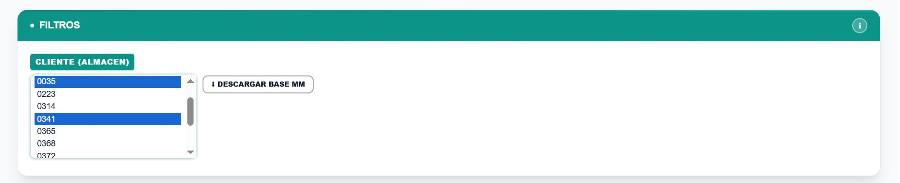
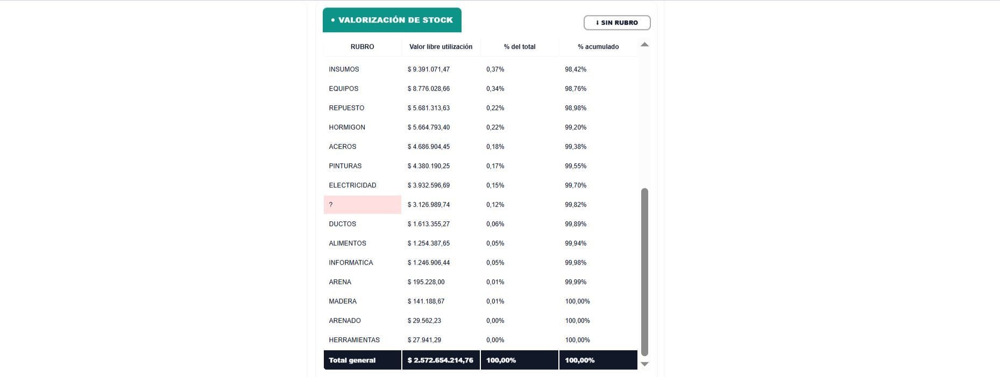
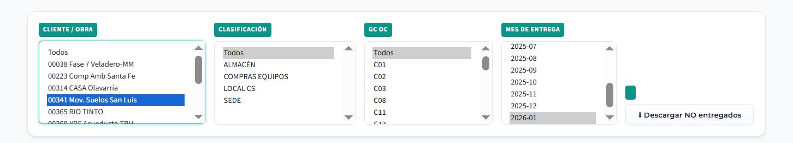
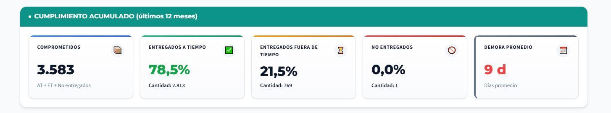
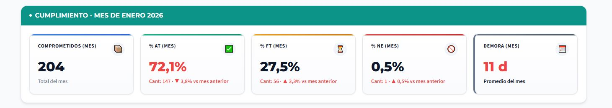
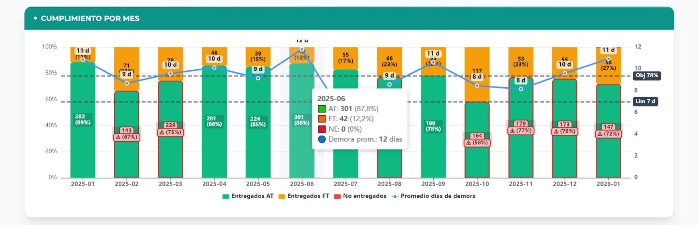

📊 ¿Cómo utilizar el Dashboard de Abastecimiento?
Seleccioná una pestaña para ver la explicación detallada de cada sección del tablero.
📦
ANÁLISIS
MM
ANÁLISIS MM
1
Filtro de Almacén

En el siguiente filtro CLIENTE (ALMACÉN) seleccioná de la lista el almacén que desees. Por ej.: Si
querés ver el almacén de la obra "00341 Mov. Suelos San Luis", seleccioná "0035 y 0341" ya que esta obra tiene dos almacenes.
Para seleccionar más de un almacén, mantené presionada la tecla Ctrl.
Desde el botón DESCARGAR BASE MM se puede descargar el maestro de materiales completo
1
TARJETAS DE DISPONIBILIDAD

CANT MATERIALES: Es la cantidad de materiales planificados en el MM .
CANT DISPONIBLE: Es la cantidad de materiales disponibles (con stock distinto de cero).
DISPONIBLE: Representa la cantidad de materiales disponibles en porcentaje.
1
ESTADOS

Este gráfico circular representa la disponibilidad de materiales del almacén seleccionado
Al stock de materiales los clasificamos en STOCK NULO, STOCK MENOR AL PP, STOCK MAYOR AL PP, STOCK
MAYOR AL STOCK MAXIMO. Se puede descargar cada una de estas clasificaciones haciendo clic en los botones correspondientes.
1
VALORIZACION DE STOCK

Esta tabla muestra la valorización de stock por RUBRO del almacén seleccionado
ALERTAS: Tené en cuenta que cuando veas RUBROS (vacios, ?, otros, obsoleto) aparecerá
en rojo, y podés ver los códigos de materiales sin rubro presionando el botón SIN RUBRO. Completá el rubro y envíalo a abastecimiento.sap .
1
EVOLUCION DEL MAESTRO DE MATERIALES

Primero seleccioná la obra en el filtro
Podrás ver la evolución del maestro de materiales a lo largo del año. Tanto la disponibilidad como las cantidades están promediadas mensualmente
✅
CUMPLIMIENTO
CUMPLIMIENTO
1
Selección de filtros

En el primer filtro CLIENTE/OBRA elegí de la lista la obra
que desees. Por ej.: "00341 Mov. Suelos San Luis". Si
querés ver solo el mes de enero, seleccioná "2026-01" en el
filtro de
MES DE ENTREGA con un click.
2
Leemos las tarjetas de cumplimiento acumulado
En estas tarjetas se muestra el cumplimiento acumulado de la obra seleccionada de los últimos 12 meses, independientemente del mes que hayamos filtrado.

COMPROMETIDOS
En la obra "00341 Mov. Suelos San Luis" nos comprometimos a entregar/gestionar 3583 ítems en los últimos 12 meses.
ENTREGADOS A
TIEMPO (AT)
De los cuales el 78,5% de esos ítems fue entregado dentro del plazo acordado,es decir, 2813 items llegaron a tiempo a la obra y figura en verde porque alcanzo el objetivo del 78% establecido para el año 2026.
FUERA DE TIEMPO
(FT)
El 21,5% de los ítems fueron entregados fuera del plazo comprometido; es decir, 769 ítems llegaron con demora a la obra.
Para comprender las causas, es necesario analizar el detalle en la pestaña Demoras.
NO ENTREGADOS
(NE)
Falta entregar 1 item a Obra. Estos son los de mayor riesgo, hay que ponerse en contacto
con quien corresponda para que se entregue lo antes posible. Para poder visualizar cuál es el ítem solo debés hacer clic
en el botón "Descargar NO entregados" en la sección de filtros.
DEMORA
PROMEDIO
De los pedidos que llegaron tarde (FT), la demora promedio fue de 9 días durante los últimos 12 meses. Figura en color
rojo porque supera el máximo establecido de 7 días.
3
Leemos las tarjetas del mes seleccionado
La segunda fila muestra solo el mes que filtramos (Ene-2026).

COMPROMETIDOS
En la obra "00341 Mov. Suelos San Luis" nos comprometimos a entregar/gestionar 204 ítems en el mes de enero.
ENTREGADOS A
TIEMPO (AT)
De los cuales el 72,1% de esos ítems fue entregado dentro del plazo acordado,es decir, 147 items llegaron a tiempo a la obra y figura en rojo porque no alcanzo el objetivo del 78% establecido para el año 2026.
FUERA DE TIEMPO
(FT)
El 27,5% de los ítems se entregaron fuera del plazo comprometido; es decir, 56 ítems llegaron tarde a la obra. Para comprender las causas, es necesario analizar el detalle en la pestaña Demoras.
NO ENTREGADOS
(NE)
Falta entregar 1 ítem a obra. Estos son los de mayor riesgo, hay que ponerse en contacto
con quien corresponda para que se entregue lo antes posible. Para poder visualizar cuál es el ítem solo debés hacer clic
en el botón "Descargar NO entregados" en la sección de filtros.
DEMORA
PROMEDIO
De los pedidos que llegaron tarde (FT), la demora promedio fue de 11 días durante el mes de enero 2026. Figura en color
rojo porque supera el máximo establecido de 7 días.
4
Analizamos el gráfico de cumplimiento por mes
¿Los números mejoran o empeoran mes a mes?

El gráfico de barras apiladas nos muestra el cumplimiento mes a mes. Cada barra suma 100%
y se divide en Entregados a término (AT),
Entregados fuera de término (FT) y
No entregados (NE):
Podemos ver que de diciembre 2025 a Enero 2026 hubo una disminución de ítems Entregados a término (AT)
de un 76% a 72% y figura con alerta en rojo porque no supera el 78% objetivo establecido para el 2026.
También podemos ver el % de ítems entregados fuera de término (FT) en un 27% como indicaban las tarjetas
y el Promedio de días de demora en color celeste, vemos cómo aumenta de 10 dias a 11 dias de Diciembre a Enero 2026.
En enero 2026 las tarjetas nos indican que tenemos 1 ítem No entregados (NE) si no figura en el gráfico solo tenes
que poner el cursor del mouse sobre la columna del mes, aparecerá una pequeña ventana con todos los datos
⏱
DEMORAS
DEMORAS
1
CANTIDAD DE DEMORAS POR MES Y POR ÁREA

Ejemplo de Dashboard de Abastecimiento — Valores ilustrativos.